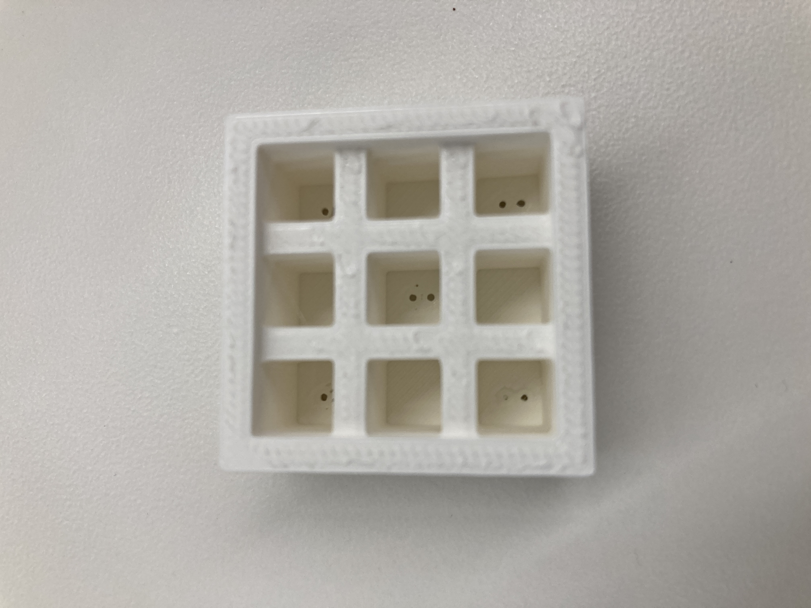
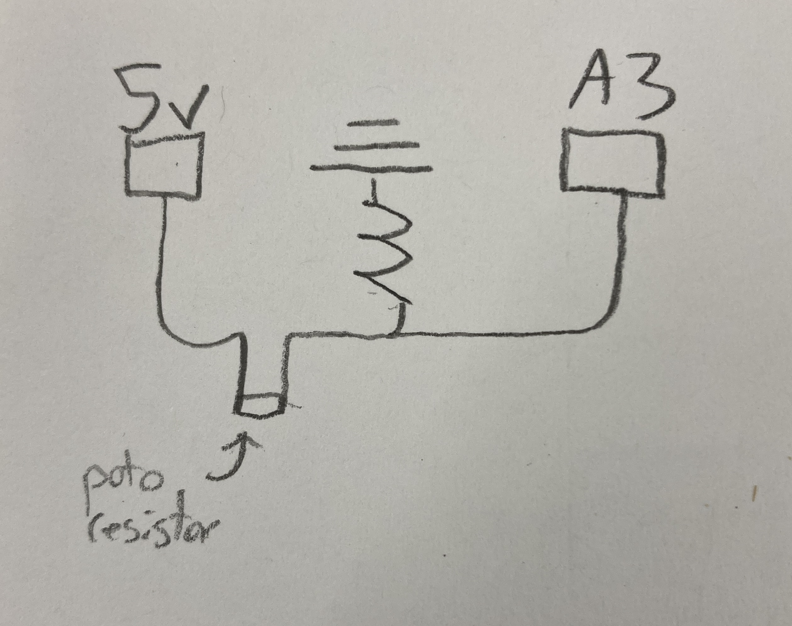

Circuit Sketch:

Actual Circuit:

This week, we learned about using various devices in order to measure physical quantities and transfer that information to a digital format in the form of our arduino. For the project, we had to make two sensors, one using the idea of capacitance and another that could sense anything. The rest of this page is split between these two sensors.
I decided to start with the capacitive sensor because I found this topic more confusing than the other sensors we had talked about. One of my final project ideas includes a wearable sleeve that one could put over their knee to track motion while working in physical therapy, and since right now the thing I'm struggling most with is bending my knee, I decided to try to measure an angle using capacitance.
I began by wiring a circuit using the tx-rx method, which I chose because it was noted on the website that the other method is typically better for sensing touch, and I assumed my plates would not be touching. I used the wiring suggestion from the course website, and my circuit ended up looking like this:
Circuit Sketch:
Actual Circuit:
In order to use this system to detect rotation, I decided to use two half-circles as cotton plates, and then the amount of rotation would determine, how much of the area of those plates is overlapping, which is one determinant of capacitance. I used the laser cutter to print two vinyl circles, and then used a dowel (which I cut and sanded using hand tools) to hold them together. Since there were limited dowels, I chose one, and then measured its thickness with calipers to include in my Fusion360 design. To make the copper plates, I wanted to use the vinyl cutter, but it wasn't working, so I went for an exacto knife instead.
Next, I put everything together roughly, and started coding. It took me a while to transfer the example code (which uses a delay, to a class that doesn't need one). I ended up having to store an array as part of my class which kept track of the measurements taken every 50 microseconds, and then using a method that takes the average of the list to return a value. My result is lain out below:
Sensor.cpp
#include "Sensor.h" #include#include "Constants.h" Sensor :: Sensor(int tx, int rx) { previous_time = micros(); tx_pin = tx; rx_pin = rx; current = 0; waiting = false; } int Sensor :: sense() { int sum = 0; for (int i = 0; i < N_SAMPLES; i++) { sum += values[i]; } return sum; } void Sensor :: update() { // Send Signal at high level and record output if (!waiting) { digitalWrite(tx_pin, HIGH); read_high = analogRead(rx_pin); previous_time = micros(); waiting = true; } // After waiting, send Signal at low level and record output if (waiting && micros() - previous_time > 100) { digitalWrite(tx_pin, LOW); int read_low = analogRead(rx_pin); values[current] = read_high - read_low; current = (current + 1) % N_SAMPLES; waiting = false; } }
Sensor.h
#ifndef SENSOR_H #define SENSOR_H #include#include "Constants.h" class Sensor { private: long previous_time; int tx_pin; int rx_pin; int read_high; bool waiting; int current; int values[N_SAMPLES]; public: Sensor(int tx, int rx); int sense(); void update(); }; #endif
And here's the client code:
#include "Sensor.h"
long result; //variable for the result of the tx_rx measurement.
int analog_pin = A3;
int tx_pin = 4;
Sensor sensor = Sensor(tx_pin, analog_pin);
void setup() {
pinMode(tx_pin, OUTPUT); //Pin 4 provides the voltage step
Serial.begin(9600);
}
void loop() {
sensor.update();
result = sensor.sense()
Serial.println(result);
}
The code was working just as the other code, but I wasn't getting the sensitivity I wanted. Nathan told me it could be because my wires were too long and I was using aligator clips, so I decided to pare down my design by soldering parts together. My first soldering job was pitiful, but I think I did alright on the other ones, and eventually got a much smaller design!


I then recorded data on different angles, and got the following chart:

So, the project didn't go as planned. I think the main problem is that the capacitance wasn't sensitive enough to the change in area of overlap, partially because there was nothing guarding the plates from each other, so even when they were as far as possible away, there was still some capacitance between them. In the future, this could possible be solved by blocking off the edges of the half-circles, which would require printing four half circles and then attaching them later. For my purposes though, I think I've learned that capacitance is not the best way to detect an angle for my project.
I'm thinking about having a vehicle that can detect color for my final project and change direction based on that color. There are color detectors out there that I could buy, but I wanted to try making one myself. The theory is that you can shine a light on a color, and based on how much light is reflected back, we can tell how dark or light that color is using a photoresistor. After I got a basic photoresistor working, I realised I was getting a lot of noise from surrounding light and inconsistent distances, so to standardize this, I decided to 3-D print a container that would have a photoresistor in the middle and 4 LED lights surrounding it. The 3-D design is included below, along with a picture of the outcome:
Next I wired up the photoresistor as shown here:
And then I wired up the lights as shown here:

Once the print was done, I was able to shift the wiring into the device, using the small holes left in the top for wires. I spent a bit of time soldering these to wires and then soldering in resistors, which was really good practice for me, as I can solder much more efficiently now. I was able to connect all the grounds on the device, saving a lot of wires, but I realized too late I should have done that for the power source for the LEDs as well, as those wires were a bit messy. Making the finshed design a bit neater is something I could certainly work on, and I think I did a bit better than usual with this one but should still spend more time on it in future weeks. I've included a few pictures here below:
I next tested it out with different colors of vinyl, and got these results:

Finally, using these results, I calibrated my code to be able to detect the vinyl color!
ColorDetector.h
#ifndef COLORDETECTOR_H #define COLORDETECTOR_H #includeclass ColorDetector { private: int led_pins[4]; int sensor_pin; void start_lights(); char *val_to_color(int value); public: ColorDetector(int sensor_pin, int led1, int led2, int led3, int led4); char *detect(); }; #endif
ColorDetector.cpp
#include "ColorDetector.h" #includeColorDetector :: ColorDetector(int sense_pin, int led1, int led2, int led3, int led4) { sensor_pin = sense_pin; led_pins[0] = led1; led_pins[1] = led2; led_pins[2] = led3; led_pins[3] = led4; start_lights(); } void ColorDetector :: start_lights() { for (int i = 0; i < 4; i++) { digitalWrite(led_pins[i], HIGH); } } char *ColorDetector :: val_to_color(int value) { if (value > 875 && value < 880){ return "RED"; } if (value > 820 && value < 825){ return "BLUE"; } if (value > 815 && value < 819){ return "GREEN"; } if (value > 975 && value < 980){ return "YELLOW"; } if (value > 788 && value < 793){ return "BLACK"; } return "UNSURE"; } char *ColorDetector :: detect() { int value = analogRead(sensor_pin); return val_to_color(value); }
Overall, I'm prretty happy with how this sensor turned out! I would need to expand it to differentiate between colors, but it was extremely accurate when doing what it was built to do!